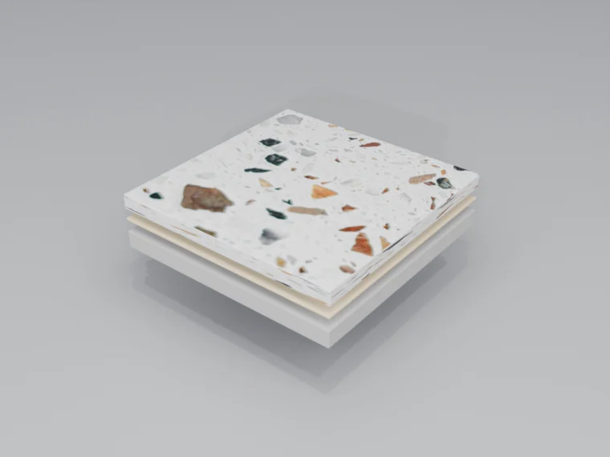

אגרגטים של שיש, זכוכית או אבן השקועים בתוך מטריצת ציאמנט או אפוקסי — ולאחר מכן מטוחנים ומלוטשים לחשיפת עומק ואופי. רצפה עם נשמה שיכולה להחזיק מעמד דורות.
היכן הטרצו מצטיין
הטרצו היה סמל לאלגנטיות ולעמידות במשך מאות שנים. גם כיום הוא ממשיך להיות בחירת הרצפה למרחבים שבהם עוצמת התכן ואורך החיים הם בעלי חשיבות עליונה.
שדות תעופה ותחבורה
עמידות לתנועה של מיליוני הולכי רגל. דפוסי הכוונה, לוגואים ושילוב מיתוג. עלות נמוכה לאורך מחזור החיים.
קמעונאות יוקרה
רצפות-הצהרה המעצימות את חוויית המותג. בחירות אגרגט ודפוסים מותאמים אישית.
מלונות ולוביים
הצהרות כניסה מרשימות. משלב עמידות עם עוצמה ויזואלית. בסגנון מורשת או עכשווי.
בריאות
רציף, היגייני, קל לניקוי. עומד בדרישות בקרת הזיהומים. העמידות לאורך זמן מפחיתה עלויות החלפה.
הכנת התשתית
הטרצו הוא התקנה קבועה הדורשת תמיכה מבנית נאותה. הכנת התשתית משתנה לפי סוג המערכת, אך היא קריטית לביצוע ארוך-טווח.
- טרצו ציאמנט (מסורתי) — דורש מצע חול-ציאמנט מעל יריעת איטום. עובי כולל 25-50 מ"מ
- טרצו אפוקסי (שכבה דקה) — מיושם ישירות על בטון מוכן. עובי כולל 10-12 מ"מ
- פסי הפרדה — פסי פליז, אבץ או פלסטיק שולטים בסדיקה ויוצרים דפוסי תכן
- מישקי התפשטות — חייבים להתיישר עם מישקי המבנה. ממולאים בחומר איטום גמיש
- בקרת לחות — קריטית למערכות אפוקסי. נדרש מחסום אדים או טיפול ממתן אם הלחות היחסית גבוהה מ-75%
תהליך הטרצו
כל התקנת טרצו עוקבת אחר תהליך מנוסה ומוכח ההופך חומרי גלם ליצירות אמנות בנות-קיימא.

יציקה והנחה
המטריצה (ציאמנט או אפוקסי) מעורבבת עם האגרגטים הנבחרים, נוצקת בין פסי ההפרדה ונפרשת לעומק המוגדר. האגרגטים מפוזרים ידנית לצפיפות.
ליטוש
ליטוש מדורג במכונות בעלות מקטעי יהלום חושף את פני האגרגט. מספר מעברים מגס (40 גְריט) עד עדין (200+ גְריט) יוצרים משטח חלק.
רביצה והברקה
חורי סיכה ממולאים ברובה תואמת, ולאחר מכן הרצפה מוברקת לגוון הסופי. שכבת איטום חודרת מגנה מבלי לשנות את המראה.
אפשרויות אגרגט
יופיו של הטרצו טמון באפשרויות התכן האינסופיות שלו דרך בחירת האגרגט:
שבבי שיש
אגרגט הטרצו הקלאסי. גדלים מ-0 (עדין) עד 8 (גדול). שונות צבע טבעית.
זכוכית
זכוכית ממוחזרת או בתולית במגוון צבעים בלתי מוגבל. ניצוץ מחזיר-אור, אפשרות בת-קיימא.
אם הפנינה
קונכיות כתושות לאפקט נוצץ. יישומים למגורי יוקרה ולאירוח.
מעורב / מותאם אישית
שילוב אגרגטים לאפקטים ייחודיים. צדפים, מתכת, מראה — האפשרויות אינסופיות.
יתרונות מרכזיים
- אורך חיים יוצא דופן — תוחלת חיים של 50+ שנים. רצפות טרצו רבות שהותקנו בשנות ה-20 של המאה הקודמת מתפקדות עד היום.
- חופש תכן — צבעים, דפוסים, לוגואים ושיבוצים בלתי מוגבלים. יכולת תכן מותאם אישית אמיתית.
- עלות נמוכה לאורך מחזור החיים — העלות הראשונית הגבוהה מתקזזת בעשורים של שירות. ניתן לשיקום, לא להחלפה.
- אפשרויות חומר — אפשרויות של זכוכית ממוחזרת, שיש ואגרגט אבן יכולות להפחית את הצריכה של חומר חדש כאשר המפרט דורש זאת.
- רציף והיגייני — ללא קווי רובה. פסי ההפרדה משולבים. קל לניקוי ולתחזוקה.
- ניתן לשיקום — ניתן לטחון וללטש מחדש למצב המקורי. רצפה שמשתפרת עם הזמן.
פרוטוקול תחזוקה
הטרצו דורש תחזוקה נמוכה במיוחד. תהליך הליטוש וההברקה יוצר משטח צפוף וסגור העמיד בפני כתמים ושחיקה.
יומי
ניגוב אבק להסרת חלקיקים שוחקים. ניגוב לח באזורים בתנועה גבוהה לפי הצורך.
שבועי
ניגוב רטוב עם חומר ניקוי בעל pH נייטרלי. מכונת שטיפה אוטומטית לשטחים גדולים.
שנתי
השחזת יהלום מקצועית של אזורים בתנועה גבוהה. יישום מחדש של שכבת איטום חודרת.
כל 10-20 שנים
ליטוש והברקת שיקום מלאים לפי הצורך לשחזור המראה המקורי.

{kind=link}
{kind=link}
{kind=link}
{kind=link}
{kind=link}
{kind=link}
{kind=link}
{kind=link}
{kind=link}
{kind=link}
{kind=link}
{kind=link}
{kind=link}
{kind=link}
{kind=link}
{kind=link}
{kind=link}
{kind=link}
{kind=link}
{kind=link}
{kind=link}
{kind=link}
{kind=link}
{kind=link}
{kind=link}
{kind=link}
{kind=link}